Actual bundled icons and outlined wordmark variants, licensed typefaces, matrix palettes and captured home screens. Arabic samples use the bundled companion font; this browser view does not prove native shaping or accessibility. Native header lockups are visible in the screen gallery.
Himayah AI
#151E37#F4E7D5#E7655A
Evidence, purpose, individuality.
حماية البيانات والمنزل ١٢٣
IBM Plex Sans / IBM Plex Sans Arabic
Implemented: Phrase-based clause screening and exact recorded passages
Agent target and limitations
Compliance X-Ray: identifies potentially problematic clauses, retrieves authoritative regulations, presents cited findings, and prepares a reviewable remediation plan.
Authentic contract applicability and remediation effectiveness remain unaccepted.
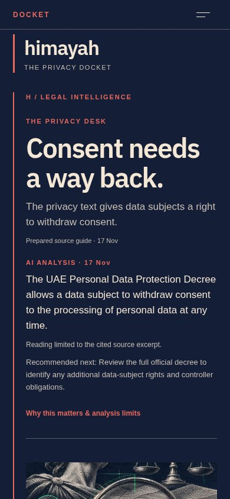
Iqamah AI
#502C43#F7EBD7#C29A5C
Evidence, purpose, individuality.
حماية البيانات والمنزل ١٢٣
Cormorant Garamond / Noto Naskh Arabic
Implemented: Entered checklist, document presence and recorded expiry assessment
Agent target and limitations
Visa Dossier Builder: evaluates available eligibility criteria, identifies missing evidence, and assembles an application checklist using current official requirements.
No automatic verified eligibility determination or application submission.

Istithmar AI
#133C67#DDF8ED#60C6AC
Evidence, purpose, individuality.
حماية البيانات والمنزل ١٢٣
Space Grotesk / Alexandria
Implemented: Exact-decimal comparison of supplied jurisdiction fees and activity lists
Agent target and limitations
Investment Navigator: researches applicable zones, licensing requirements, and tax rules, then prepares sourced decision comparisons.
Live discovery of zones, current fees and applicable tax treatment is not implemented.

Munagasah AI
#282A2F#FFBE59#F4F2EC
Evidence, purpose, individuality.
حماية البيانات والمنزل ١٢٣
Archivo Narrow / Tajawal
Implemented: Entered requirements/capability matrix, recorded deadline and bid outline
Agent target and limitations
Tender Strategist: discovers published opportunities, checks qualification criteria, tracks deadlines, and drafts bid-preparation tasks.
No live opportunity discovery, tender-pack acquisition or bid submission.
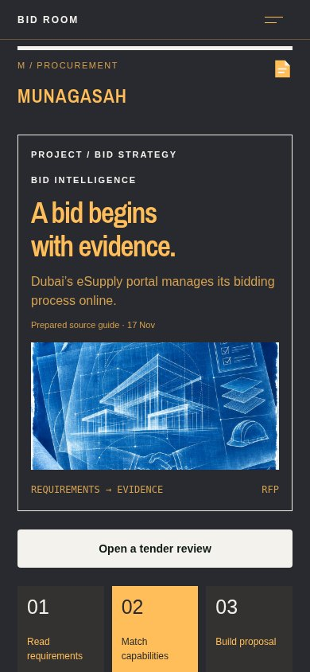
Sahil AI
#176D6A#F8F7F1#AFD9CF
Evidence, purpose, individuality.
حماية البيانات والمنزل ١٢٣
Plus Jakarta Sans / Cairo
Implemented: Entered service prerequisites and document checklist
Agent target and limitations
Service Pathfinder: identifies the appropriate government process, prepares required documentation lists, and guides permitted next steps.
Current official DEWA context is available; no general cross-government service search or application submission.

Tawteen AI
#1F4945#F1CAB1#C0E7DD
Evidence, purpose, individuality.
حماية البيانات والمنزل ١٢٣
Manrope / Readex Pro
Implemented: Entered workforce aggregation and an explicit target scenario
Agent target and limitations
Workforce Planner: examines applicable Emiratisation requirements, models supported scenarios, and recommends compliant actions.
Applicable regulatory target selection is not automatically determined.

Adl AI
#3C283B#E3D7E9#BE8E9C
Evidence, purpose, individuality.
حماية البيانات والمنزل ١٢٣
Libre Baskerville / Amiri
Implemented: Entered event chronology and claimed amounts
Agent target and limitations
Property Rights Analyst: reviews available documents and official rules, flags legal questions, and prepares source-backed summaries for human review.
A source-backed summary is not an authoritative legal ruling or authentic-case acceptance.
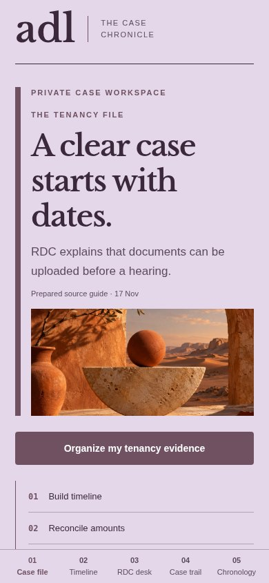
Tawassul B2B
#123D32#EDE4CD#B67F3C
Evidence, purpose, individuality.
حماية البيانات والمنزل ١٢٣
Sora / Vazirmatn
Implemented: Entered account needs matched to approved product facts and correspondence preparation
Agent target and limitations
Negotiation Architect: evaluates stated objectives, researches public business context, prepares negotiation scenarios, and drafts correspondence for approval.
No live stakeholder research, negotiation execution or sent correspondence.
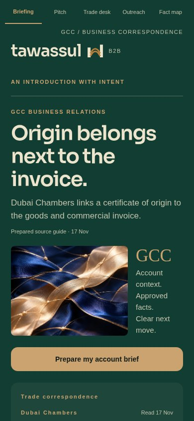
Adab AI
#782859#F9DAE0#D6B0FC
Evidence, purpose, individuality.
حماية البيانات والمنزل ١٢٣
Fraunces / Aref Ruqaa
Implemented: Exact approved-claim checks, prohibited terms and editorial boundaries
Agent target and limitations
Cultural Campaign Director: investigates relevant market context, evaluates messaging, and develops localized creative recommendations with explicit assumptions.
Model recommendations do not establish campaign performance or cultural approval.
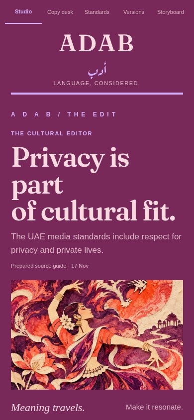
Khidmah AI
#225B74#FFF5CC#77E2C8
Evidence, purpose, individuality.
حماية البيانات والمنزل ١٢٣
Nunito Sans / Almarai
Implemented: Entered policy-window and delegated-amount checks, response draft
Agent target and limitations
Resolution Agent: classifies authorized requests, identifies relevant policies, proposes remedies, and executes permitted service actions.
No live service system integration or issued refund.
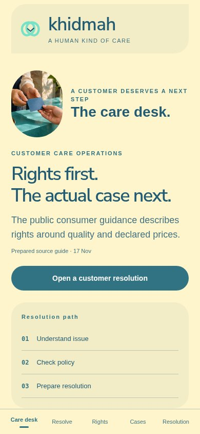
Jomrok AI
#1645AE#F4F3ED#FF8A37
Evidence, purpose, individuality.
حماية البيانات والمنزل ١٢٣
Barlow Condensed / Changa
Implemented: Required-field inspection and a supplied-rate duty scenario
Agent target and limitations
Customs Intelligence Agent: analyzes shipment information, researches applicable requirements, identifies missing documentation, and flags classification uncertainties.
No authoritative HS classification, live shipment tracking or customs clearance.

Khibrat AI
#34312D#D9E14D#F1EEE5
Evidence, purpose, individuality.
حماية البيانات والمنزل ١٢٣
DM Sans / Harmattan
Implemented: Human-defined criteria mapped to entered evidence
Agent target and limitations
Talent Review Copilot: extracts job-relevant qualifications, maps evidence to human-defined criteria, and prepares transparent assessments without autonomous hiring decisions.
No autonomous hiring, protected-attribute inference or validated hiring fairness certification.
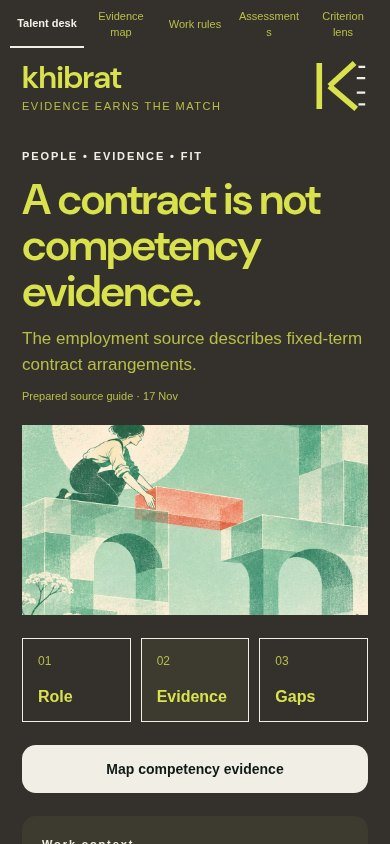
Majlis AI
#403A78#F5EBE9#D5B5F1
Evidence, purpose, individuality.
حماية البيانات والمنزل ١٢٣
Urbanist / Kufam
Implemented: Entered onboarding tasks, dependencies and completion declarations
Agent target and limitations
Onboarding Coordinator: organizes approved onboarding requirements, identifies incomplete steps, and prepares relevant communications and tasks.
No company-system synchronization or automatically sent communication.

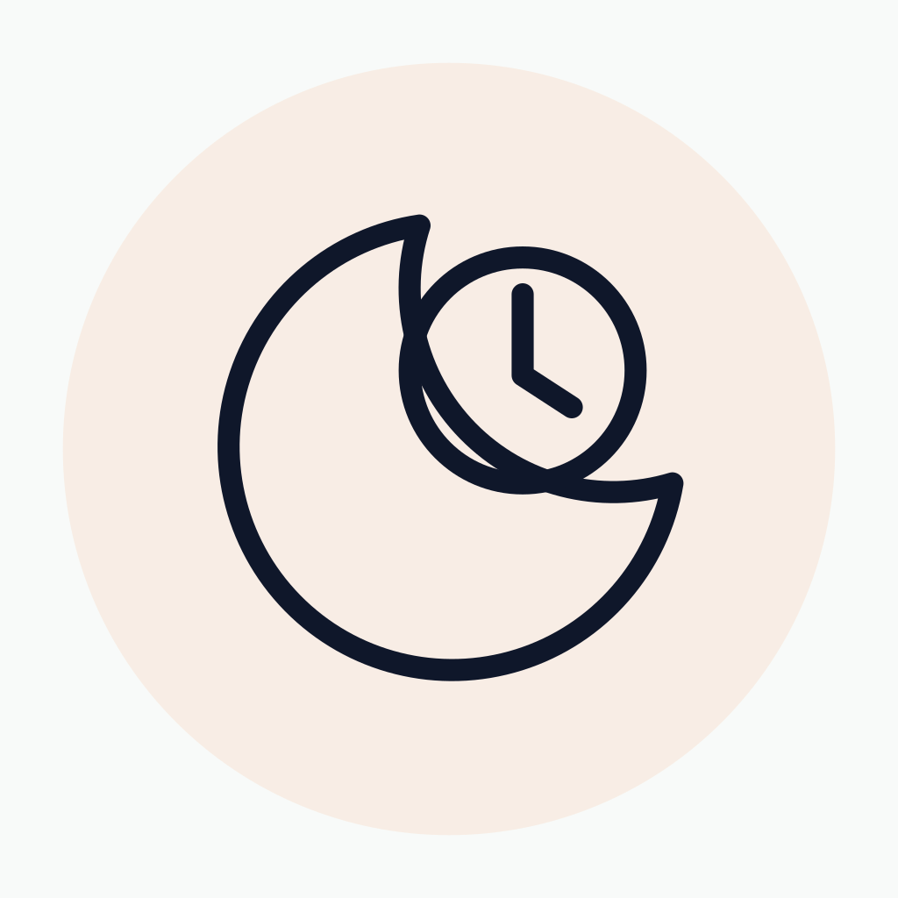
Rafiq
#6D5B98#F9EEE8#F4A89D
Evidence, purpose, individuality.
حماية البيانات والمنزل ١٢٣
Quicksand / Noto Kufi Arabic
Implemented: Actual device time and planning around supplied commitments
Agent target and limitations
Daily Companion Agent: organizes explicitly provided goals and available context, prepares useful next steps, and supports authorized personal workflows.
No connected calendar, booking or live personal-data feed.

Sawm AI
#131F4D#FFE8B0#D0B87C
Evidence, purpose, individuality.
حماية البيانات والمنزل ١٢٣
Newsreader / Scheherazade New
Implemented: Planning within entered day and rest boundaries
Agent target and limitations
Ramadan Planning Agent: retrieves location-relevant schedules when permitted, helps organize personal fasting plans, and identifies timing-sensitive reminders.
Location-specific fasting schedules and verified prayer-time retrieval are not connected.

Mizan AI
#143C32#EFF1E4#9DCA9C
Evidence, purpose, individuality.
حماية البيانات والمنزل ١٢٣
Public Sans / Mada
Implemented: Duplicate-safe decimal ledger, explicit budget basis and optional entered assumptions
Agent target and limitations
Ethical Finance Analyst: organizes authorized financial inputs, researches relevant principles, and prepares transparent comparisons without presenting uncertain religious rulings as definitive.
No bank connection, investment guarantee or definitive religious ruling.
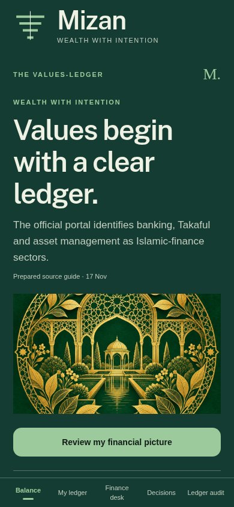
Thawg AI
#D84A34#FFF0D8#3F80A6
Evidence, purpose, individuality.
حماية البيانات والمنزل ١٢٣
Bricolage Grotesque / Baloo Bhaijaan 2
Implemented: Supplied dining candidates filtered by price, seats and all required tags
Agent target and limitations
Dining Discovery Agent: searches suitable restaurants, checks published menus and available certification evidence, and distinguishes confirmed from unverified halal claims.
Live restaurant/menu discovery, current availability and halal certification checks are not connected.
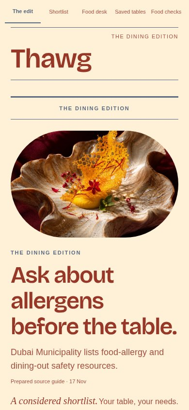
Manzil AI
#42275A#FBE5D5#E5A9A0
Evidence, purpose, individuality.
حماية البيانات والمنزل ١٢٣
Outfit / El Messiri
Implemented: Duplicate-safe receipt reconciliation and user-entered household budgets
Agent target and limitations
Household Budget Agent: analyzes user-provided or authorized financial records, identifies patterns, and prepares actionable household budget plans.
No receipt OCR, bank import or VAT-recovery determination.

Gurbah AI
#273B63#FFF2DB#F7A445
Evidence, purpose, individuality.
حماية البيانات والمنزل ١٢٣
Epilogue / Reem Kufi
Implemented: Entered relocation task dependency review with official public context
Agent target and limitations
Relocation Navigator: researches official requirements, assembles a personalized checklist from volunteered information, and tracks available relocation tasks.
No automatic immigration verification, appointment or official submission.
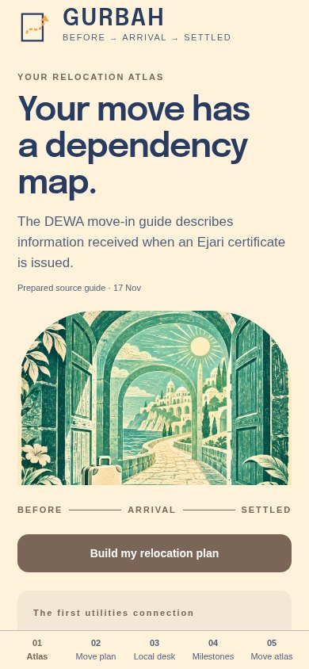
Amanah Eco
#215B39#F8F8DA#BDD652
Evidence, purpose, individuality.
حماية البيانات والمنزل ١٢٣
Raleway / Lemonada
Implemented: Entered usage normalized by actual period length
Agent target and limitations
Energy Optimization Agent: evaluates available usage data, identifies efficiency opportunities, and prepares recommendations with explicitly stated assumptions.
No live meter integration or verified emissions, tariff or reward account.
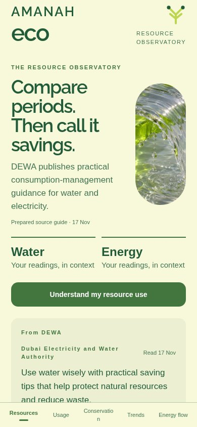
Nafas AI
#4A7480#F0F4F1#AEC7BB
Evidence, purpose, individuality.
حماية البيانات والمنزل ١٢٣
Comfortaa / Markazi Text
Implemented: Local breathing pacing and volunteered self-care preferences
Agent target and limitations
Wellbeing Support Agent: offers evidence-informed exercises and personalized suggestions based on information voluntarily shared, without inventing diagnoses or biometric readings.
No biometric measurement, diagnosis or treatment; physical device pacing/accessibility remains unaccepted.
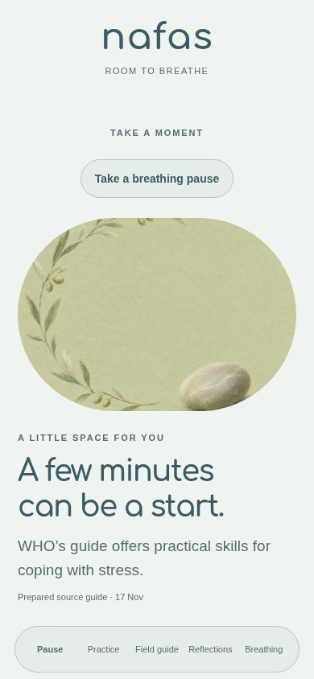
Tadweer AI
#DB5A27#F7F2E3#1F3942
Evidence, purpose, individuality.
حماية البيانات والمنزل ١٢٣
Work Sans / Jomhuria
Implemented: Declared-material matching to supplied operator capabilities
Agent target and limitations
Recycling Identification Agent: interprets user-submitted images, identifies probable material categories, and researches applicable disposal instructions.
Camera-first image identification and live local disposal search are not implemented.
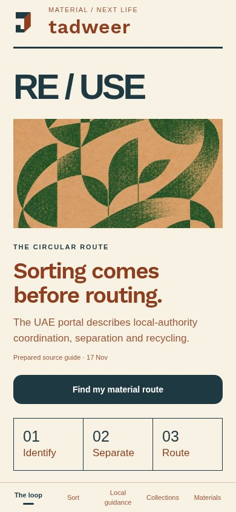
Turath AI
#776246#F6F1E7#B0A385
Evidence, purpose, individuality.
حماية البيانات والمنزل ١٢٣
Literata / Lateef
Implemented: Entered source excerpts and topic matching with citations
Agent target and limitations
Heritage Research Agent: retrieves documented cultural information, assembles provenance-aware summaries, and identifies disputed or uncertain historical interpretations.
Source authenticity and historical interpretation are not established by a model or a text fingerprint.

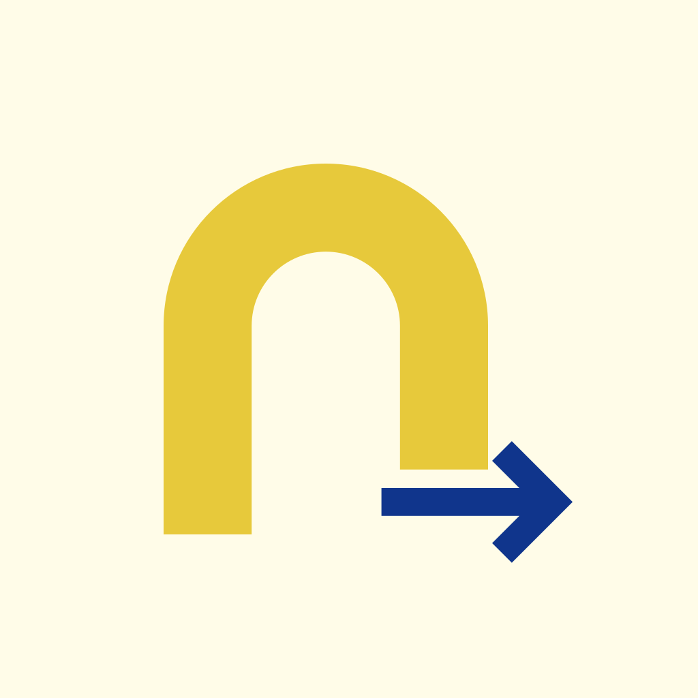
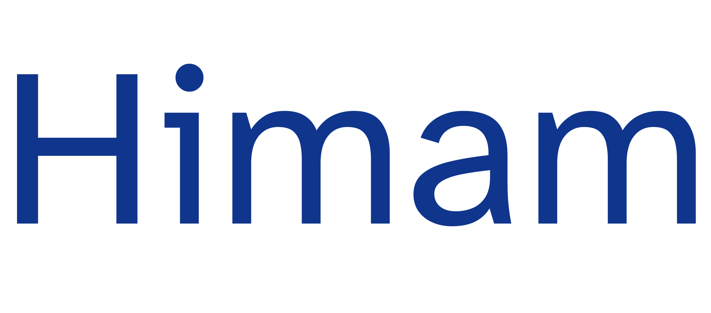
Himam AI
#10358C#FFFCE8#E7C93B
Evidence, purpose, individuality.
حماية البيانات والمنزل ١٢٣
Atkinson Hyperlegible / Noto Sans Arabic
Implemented: Entered access needs reviewed against reported route segments
Agent target and limitations
Accessibility Assistance Agent: helps users complete authorized tasks through suitable input and output modes, without assuming their abilities or preferences.
No live lift telemetry, voice-system integration or safety guarantee.

Hisad AI
#A23E3C#FCF3E4#F0BB52
Evidence, purpose, individuality.
حماية البيانات والمنزل ١٢٣
Syne / Katibeh
Implemented: Entered food conditions, expiry and recipient capacity screening
Agent target and limitations
Food Redistribution Coordinator: matches available donated food with eligible participating organizations where supported, prepares pickup coordination, and observes food safety and authorization requirements.
No participating-organization network, actual pickup coordination or confirmed handoff.
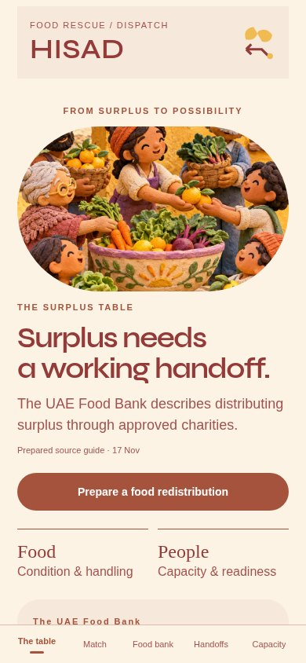